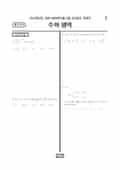

문제지


시험지를 먼저 풀어 보세요. 등급컷·표준점수·난이도는 흐리게 가려 뒀어요.
| 등급 | 원점수 | 표준점수 | 백분위 | 누적 |
|---|---|---|---|---|
| 1 | 85 | 133 | 96 | 4.24% |
| 2 | 76 | 126 | 89 | 12.02% |
| 3 | 65 | 118 | 77 | 24.13% |
| 4 | 52 | 107 | 59 | 41.48% |
| 5 | 33 | 92 | 40 | 60.44% |
| 6 | 17 | 79 | 21 | 81.53% |
| 7 | 12 | 75 | 11 | 91.26% |
| 8 | 9 | 72 | 5 | 97.13% |
등급별 컷 · 원점수는 EBSi·입시기관 값(비공식) · 만점 100점
정답 변경 없음
원문 표에서 이 과목 문항을 찾지 못했어요
심사 대상 28개 문항 37건으로 모두 '이상 없음'.
수학 영역 전체 응시자 기준입니다. 한국교육과정평가원이 교육부 보도자료로 공개한 표준점수 도수분포로 계산했습니다.
발행 기관: 한국교육과정평가원(KICE). 파일 위치: 이 사이트가 보관한 사본. 저작권은 발행 기관에 있습니다. 원본과 다르거나 게시 중단이 필요하면 연락처로 알려 주세요. 등급컷 출처 구분은 데이터 원칙에서 설명합니다.
막대 색은 역대 대비 난이도 · 진한 막대가 이 시험 · 막대를 누르면 그 회차로 이동
| 회차 | 1등급컷 | 표점 최고 | 1등급 표점 | 난이도 |
|---|---|---|---|---|
| 9모2023학년도이 시험 | 85 | 145 | 133 | 보통 |
| 6모2023학년도 | 84 | 147 | 134 | 어려움 |
| 수능2022학년도 | 87 | 147 | 137 | 보통 |
| 9모2022학년도 | 85 | 145 | 133 | 어려움 |
| 6모2022학년도 | 84 | 146 | 134 | 매우 어려움 |